Cele mai bune fonduri de ten: recenzii și recomandări
În această categorie veți găsi recenzii ale celor mai populare fonduri de ten, comparații între texturi, nivelul de acoperire și rezistența produselor. Analizăm compoziția, selectăm produse potrivite pentru diferite tipuri de piele și împărtășim experiența reală de utilizare.
Consultații / ProgramareRecenzii populare de fonduri de ten
Cele mai bune fonduri de ten pentru pielea uscată
Selecție de produse cu hidratare bună și finisaj natural.
Cele mai bune fonduri de ten pentru pielea grasă
Produse matifiante cu rezistență bună.
Cele mai bune fonduri de ten pentru pielea mixtă
Formule care echilibrează zonele uscate și cele grase.
Cele mai bune fonduri de ten pentru pielea sensibilă
Produse hipoalergenice fără ingrediente iritante.
Fonduri de ten cu acoperire ușoară
Uniformizează tonul pielii fără strat gros.
Fonduri de ten rezistente
Cele mai bune opțiuni pentru o zi lungă.
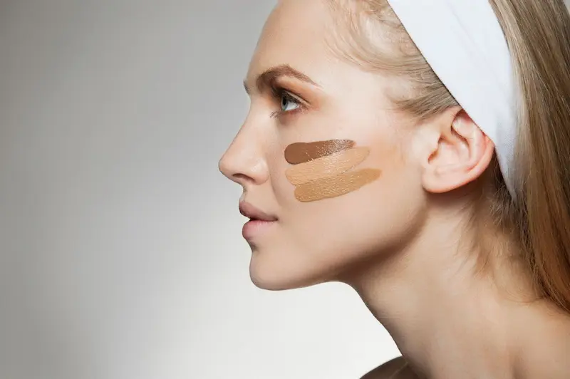
Sfaturi de la artiștii de make-up pentru aplicarea fondului de ten
Aplicarea corectă a fondului de ten ajută la uniformizarea tonului pielii și ascunderea roșeței sau a imperfecțiunilor. Artiștii de make-up recomandă să țineți cont de textura produsului, tipul pielii și modul de estompare.
Pregătiți pielea
Înainte de aplicarea fondului de ten, curățați și hidratați pielea. Acest lucru asigură un aspect uniform și o durată mai lungă a machiajului.
Folosiți o cantitate minimă
Aplicați produsul în strat subțire și construiți acoperirea treptat acolo unde este necesar. Un strat prea gros poate părea nenatural.
Estompați cu grijă
Pentru un rezultat natural, artiștii recomandă să estompați fondul de ten cu buretele sau pensula, mișcând de la centrul feței spre margini.
Alegeți nuanța corectă
Nuanța fondului de ten trebuie să corespundă cât mai bine culorii pielii sau să fie cu un ton mai deschis pentru un efect de luminozitate.
Cum alegi fondul de ten
Atunci când alegi un fond de ten, este important să ții cont de tipul pielii, nivelul de acoperire dorit și textura produsului.
Ai nevoie de machiaj profesional?
Dacă dorești să alegi nuanța perfectă sau să faci un machiaj profesional, apelează la un make-up artist.
Vezi serviciile de machiaj

Cele mai bune fonduri de ten pentru pielea uscată
Pentru pielea uscată este important să alegi fonduri de ten cu ingrediente hidratante, precum acid hialuronic, glicerină și uleiuri nutritive. Aceste produse ajută la evitarea senzației de piele uscată și nu evidențiază descuamările.
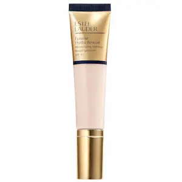
Hidratare intensă și finisaj natural
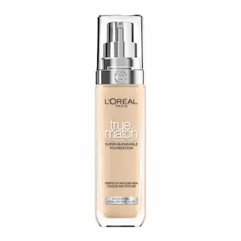
Textură ușoară și efect luminos
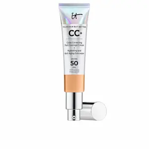
Uniformizează bine tonul pielii
| Fond de ten | Caracteristici |
|---|---|
|
Estée Lauder Futurist Hydra Rescue
Hidratare intensă și finisaj natural. Potrivit pentru pielea uscată, uniformizează tonul feței și oferă un efect luminos delicat. |
Hidratare intensă și finisaj natural |
|
L'Oréal True Match Nude
Textură ușoară cu efect radiant. Creează un aspect natural și nu evidențiază descuamările. |
Textură ușoară și efect luminos |
|
IT Cosmetics Your Skin But Better
Uniformizează bine tonul pielii, menține hidratarea și confortul pe parcursul întregii zile. |
Uniformizează tonul pielii |
Cele mai bune fonduri de ten pentru pielea grasă
Pentru pielea grasă sunt potrivite fondurile de ten matifiante cu rezistență îndelungată. Acestea ajută la controlul luciului și mențin machiajul pe parcursul întregii zile.
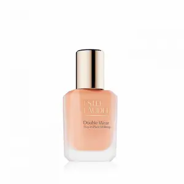
Acoperire foarte rezistentă
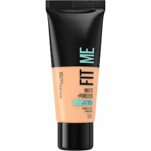
Efect matifiant și textură ușoară
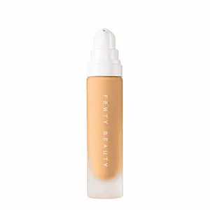
Controlează bine luciul pielii
| Fond de ten | Caracteristici |
|---|---|
|
Estée Lauder Double Wear
Unul dintre cele mai cunoscute fonduri de ten rezistente. Oferă acoperire mare și finisaj mat, potrivit pentru pielea grasă și mixtă. |
Acoperire foarte rezistentă |
|
Maybelline Fit Me Matte + Poreless
Efect matifiant și textură ușoară. Controlează luciul în zona T. |
Efect matifiant și textură ușoară |
|
Fenty Beauty Pro Filt’r
Controlează bine luciul pielii și are rezistență îndelungată. Potrivit pentru pielea mixtă. |
Controlează luciul pielii |
Cele mai bune fonduri de ten pentru pielea mixtă
Pentru pielea mixtă sunt potrivite formulele universale care nu usucă zonele uscate și nu accentuează luciul în zona T.
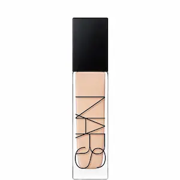
Acoperire naturală
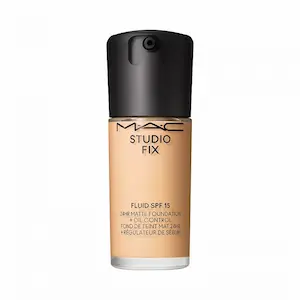
Echilibru între matifiere și hidratare
| Fond de ten | Caracteristici |
|---|---|
|
NARS Natural Radiant Longwear
Acoperire naturală, controlează luciul pielii și uniformizează tonul feței. |
Acoperire naturală |
|
MAC Studio Fix Fluid
Echilibru între matifiere și hidratare. Potrivit pentru pielea mixtă. |
Echilibru între matifiere și hidratare |
Cele mai bune fonduri de ten pentru pielea sensibilă
Pentru pielea sensibilă este important să alegi fonduri de ten hipoalergenice, fără parfumuri agresive și componente iritante.
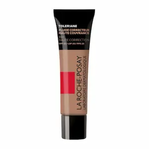
Potrivit pentru pielea sensibilă
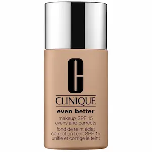
Formulă ușoară fără componente iritante
| Fond de ten | Caracteristici |
|---|---|
|
La Roche-Posay Toleriane Teint
Potrivit pentru pielea sensibilă, acoperire delicată, nu provoacă iritații. |
Potrivit pentru pielea sensibilă |
|
Clinique Even Better
Formulă ușoară fără componente iritante, potrivit pentru utilizarea zilnică. |
Formulă ușoară fără componente iritante |
Fonduri de ten cu acoperire ușoară
Ideal pentru machiajul zilnic, creează un efect natural de „a doua piele”. Uniformizează tonul feței fără a crea un strat dens.
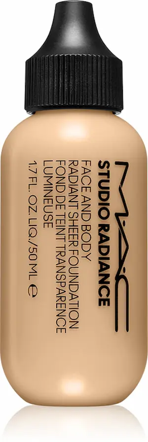
Acoperire foarte ușoară și efect luminos natural
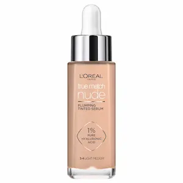
Textură ușoară cu efect hidratant
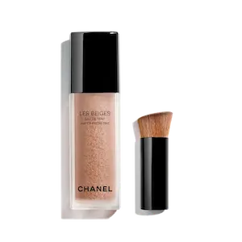
Rezultat foarte natural
| Fond de ten | Caracteristici |
|---|---|
|
MAC Face & Body
Acoperire foarte ușoară și efect luminos natural. Potrivit pentru toate tipurile de piele. |
Acoperire foarte ușoară și efect luminos natural |
|
L'Oréal True Match Nude
Textură ușoară cu efect hidratant, uniformizează tonul feței. |
Textură ușoară cu efect hidratant |
|
Chanel Les Beiges Water Fresh Tint
Rezultat foarte natural, acoperire imperceptibilă. |
Rezultat foarte natural |
Fonduri de ten rezistente
Fondurile de ten rezistente oferă o acoperire de durată și ajută machiajul să reziste pe parcursul întregii zile.
Rezistență foarte mare, până la 24 de ore
Efect matifiant și acoperire de durată
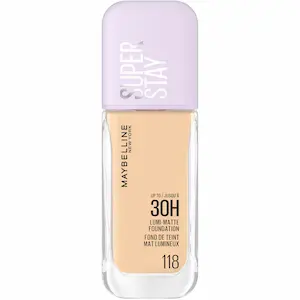
Rezistență și acoperire densă
| Fond de ten | Caracteristici |
|---|---|
|
Estée Lauder Double Wear
Rezistență foarte mare, până la 24 de ore, acoperire densă, finisaj mat. |
Rezistență foarte mare, până la 24 de ore |
|
Fenty Beauty Pro Filt'r
Efect matifiant și acoperire de durată. Potrivit pentru pielea grasă și mixtă. |
Efect matifiant și acoperire de durată |
|
Maybelline Super Stay
Rezistență și acoperire densă. Ideal pentru purtare îndelungată. |
Rezistență și acoperire densă |
Întrebări frecvente
Cum aleg nuanța potrivită de fond de ten?
Cel mai bine este să testezi produsul în lumină naturală pe linia maxilarului.
Pot folosi fondul de ten în fiecare zi?
Da, dacă produsul este potrivit pentru tipul tău de piele și nu provoacă iritații.